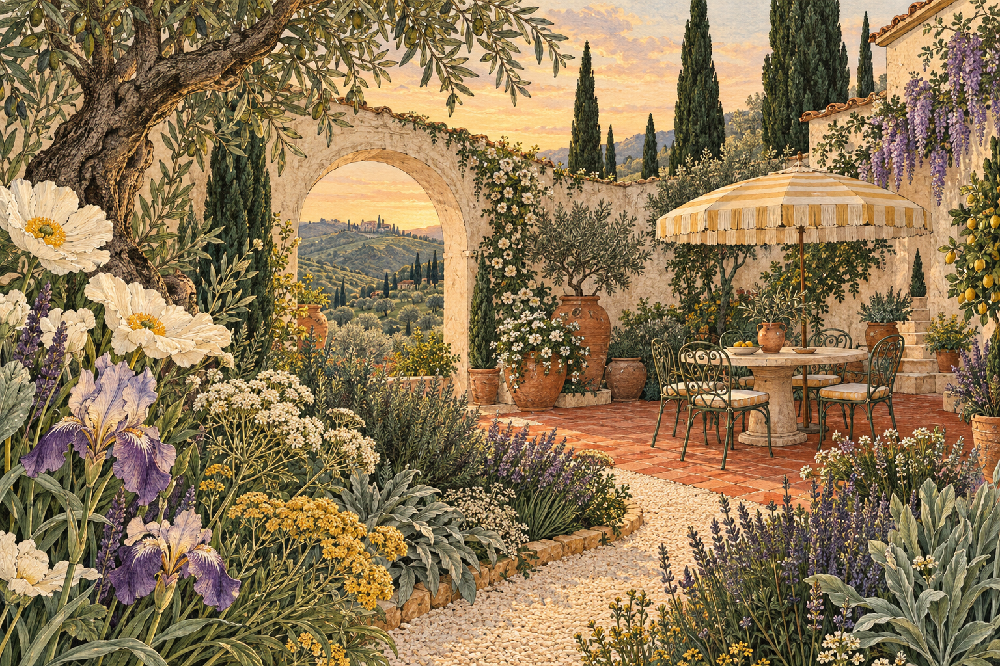

A little wild.
A little wonder.
All yours.
Your first home deserves a garden with a little soul. Dream it, shape it, grow it — one wonderfully doable step at a time.
Just a patch of possibility.

Big dreams.
Small, lovely steps.
Start with your shape.
Straight lines, soft curves, tiny corners. There's room for the garden you actually have.
↗02 / PLAY A LITTLEMake it feel like you.
Pick your paving. Plant a possibility. Move the table, then move it back again.
↗03 / SEE THE POSSIBILITYStay for the evening.
Watch the seasons shift. Turn the lights on. Imagine that first dinner outside.
↗Your muddy shoes.
Your long lunches.
Your kind of outside.
Let's see what grows ↗Your garden, in the making.
A garden you love.
A plan you can pace.
Still part of the story.
These costs need a quote, so they are not counted as zero.
Where do the numbers come from?
Terra illustrative dataset, created 29 October 2026. Each selected material displays its sample rate per sq ft in the ground library and cost breakdown; a 10% material allowance is included. These illustrative rates are not retail prices. Plants and loose objects use visible sample supply allowances. Built structures and service installations require quotes. You may record a dated supplier quote for the project ZIP; these quotes apply only to matching quantities and ZIPs and are user-entered, not independently verified. Sizes come from this plan, not a site survey. ZIP location lookup does not provide prices, nursery stock or plant hardiness. No live climate or botanical suitability service is connected.